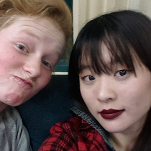

The Current Techmasters (Roster of March 18th, 2015)
The Board:
Co-Presidents

Cameron Wong
"Yo! I'm Cam, a three year upper/four year senior from California. I've been hobby programming for most of my life, and I've picked up a lot of languages over that time (I'd say I'm proficient at Python, Java, LISP, C++, C# and ARM Assembly, and can use Ruby/javascript and Haskell pretty comfortably as well), and I'm always looking for new and interesting projects."

Karen Xia
"I'm Karen. Formerly from Michigan, I'm currently from somewhere-in-California. I know some Python, Java, Ruby, and CSS, but do not how to end this bio."